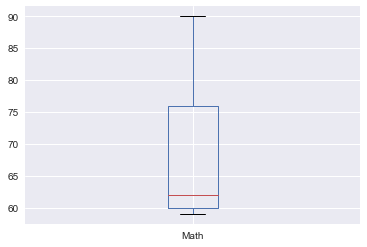

Pandas 是 python 中最常用的数据统计包，而数据可视化一般是使用 matplotlib 或者 seaborn。
其实 Pandas 已经内置了 matplotlib / pylab 用于数据可视化的方法，在分析一维和二维数据时非常方便。
“pandas.DataFrame.plot Make plots of DataFrame using matplotlib / pylab.”
如何调用
DataFrame.boxplot
DataFrame.hist
DataFrame.plot
其中 DataFrame.plot 既是可调用的方法也是一个命名空间。
既可以使用 DataFrame.plot(kind=kind) 也可以使用 DataFrame.plot.kind 来调用。
例：
1
df.plot(kind='line')
等价于
1 | df.plot.line() |
DataFrame.plot 图表类型
‘line’ : 折线图 (default)
‘bar’ : 条形图
‘barh’ : 垂直条形图
‘hist’ : 直方图
‘box’ : 箱线图
‘kde’ : 核密度估计
‘density’ : same as ‘kde’
‘area’ : 面积图
‘pie’ : 饼状图
‘scatter’ : 散点图
‘hexbin’ : 六边形图
实例
引入需要使用的包：
1 | import pandas as pd |
构建一个用于演示的简单数据集 students：
1 | students = pd.DataFrame({ |
1 | students |
| Age | Biology | Group | Id | Math | Name | Physics | |
|---|---|---|---|---|---|---|---|
| 0 | 18 | 71 | A | 0 | 90 | Hou Yi | 74 |
| 1 | 19 | 75 | B | 1 | 76 | Jiang Ziya | 97 |
| 2 | 19 | 89 | A | 2 | 60 | Tai Yi | 91 |
| 3 | 18 | 94 | A | 3 | 62 | Zhao Yun | 75 |
| 4 | 18 | 67 | B | 4 | 59 | Liu Bei | 58 |
字段说明：
Id：编号
Age: 年龄
Name：姓名
Group：分组
Math：数学成绩
Biology：生物成绩
Physics：物理成绩
对于成绩这样的变量，箱线图是非常合适的可视化方案
1 | students['Math'].plot.box() |
<matplotlib.axes._subplots.AxesSubplot at 0x1201a2c50>

可以一次性把所科目的成绩都可视化出来
1 | students[['Math', 'Biology', 'Physics']].plot.box() |
<matplotlib.axes._subplots.AxesSubplot at 0x11e5d6690>

也可以通过平均值对比下各科成绩的情况
1 | students[['Math', 'Biology', 'Physics']].mean().plot.line() |
<matplotlib.axes._subplots.AxesSubplot at 0x11d774fd0>
可以直接通过 by 参数查看 groupby 分组信息后的成绩分布
1 | students[['Math', 'Biology', 'Physics', 'Group']].boxplot(by='Group', figsize=(12,6)) |
array([[<matplotlib.axes._subplots.AxesSubplot object at 0x1203b6f50>,
<matplotlib.axes._subplots.AxesSubplot object at 0x1207edb10>],
[<matplotlib.axes._subplots.AxesSubplot object at 0x120875990>,
<matplotlib.axes._subplots.AxesSubplot object at 0x1208e72d0>]], dtype=object)

或者是 groupby 年龄的成绩分布
1 | students[['Math', 'Biology', 'Physics', 'Age']].boxplot(by='Age', figsize=(12,6)) |
array([[<matplotlib.axes._subplots.AxesSubplot object at 0x1203b6fd0>,
<matplotlib.axes._subplots.AxesSubplot object at 0x120cba5d0>],
[<matplotlib.axes._subplots.AxesSubplot object at 0x120d40450>,
<matplotlib.axes._subplots.AxesSubplot object at 0x120da5d50>]], dtype=object)
如果想按两个条件来查看分布，可以给 by 参数传递一个数组(实例数据较少，可能不会展示出全部纬度的图)
1 | students[['Math', 'Biology', 'Physics', 'Age', 'Group']].boxplot(by=['Age', 'Group'], figsize=(12,6)) |
array([[<matplotlib.axes._subplots.AxesSubplot object at 0x1217750d0>,
<matplotlib.axes._subplots.AxesSubplot object at 0x123681d50>],
[<matplotlib.axes._subplots.AxesSubplot object at 0x1238b7bd0>,
<matplotlib.axes._subplots.AxesSubplot object at 0x123929510>]], dtype=object)

也可以通过数据的处理来查看样本中的数量分布，比如按分组查看样本数量分布
1 | students.groupby('Group')['Id'].count().plot.pie(figsize=(6,6)) |
<matplotlib.axes._subplots.AxesSubplot at 0x120b0ee10>
或者同时按分组和年龄查看样本数量分布
1 | students.groupby(['Group', 'Age'])['Id'].count().plot.pie(figsize=(6,6)) |
<matplotlib.axes._subplots.AxesSubplot at 0x11ec2ca90>

其它类型的图表使用方法基本也都类似，选择自己需要的表现形式即可。
如果对于可视化的需求比较简单，直接使用 pandas 比使用 matplotlib 要简洁畅快不少。